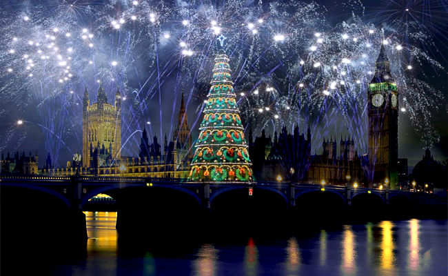

Англия


|
|
Англия Чтобы быть вместе целый год, влюбленные должны поцеловатьсяВ Англии принято на Новый год разыгрывать представления для детей на сюжеты старинных английских сказок. Лорд Беспорядок ведет за собой веселое карнавальное шествие, в котором принимают участие сказочные персонажи: Хобби Хорс, Мартовский заяц, Шалтай-Болтай, Панч и другие. Всю новогоднюю ночь уличные торговцы продают игрушки, свистульки, пищалки, маски, воздушные шары. Именно в Англии возник обычай обмениваться к Новому году поздравительными открытками. Первая новогодняя открытка была напечатана в Лондоне в 1843 году. Перед сном дети ставят на стол тарелку для подарков, которые им принесет Санта Клаус, а в башмаки кладут сено - угощение для ослика. О приходе Нового года возвещает колокол. Правда звонить он начинает немного раньше полуночи и делает это "шепотом" - одеяло, которым он укутан, мешает ему продемонстрировать всю мощь. Но ровно в двенадцать колокола раздевают, и они начинают громогласно звонить в честь Нового года. В эти минуты влюбленные, чтобы не расставаться в будущем году, должны поцеловаться под веткой омелы, считающейся магическим деревом. В английских домах к новогоднему столу подают индейку с кашатнами и жареным картофелем под соусом, а также тушеную брюссельскую капусту с мясными пирогами, после чего следуют пудинг, сладости, фрукты. На Британских островах имеет большое распространение обычай "впуска Нового года" - символический рубеж перехода от прошлой жизни к новой. Когда часы бьют 12, открывают заднюю дверь дома, чтобы выпустить Старый год, а с последним ударом часов открывают переднюю дверь, впуская Новый год. |
|